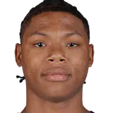
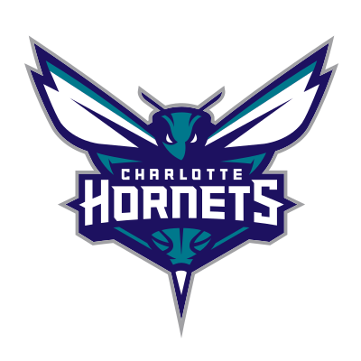

Kyle Anderson
2014-15 to 2025-26 · Career Map
His best final NBA finish was #3 of 30, with the 2023-24 Minnesota Timberwolves. In his 767 games for 6 teams over 12 seasons they went 452–315 (58.9%), +137 games over .500, with an average final finish of 11.7. The biggest one-season rise in his career: the Minnesota Timberwolves went from #15 in 2022-23 to #3 in 2023-24.
Jump to: Record by opponent · Season by season · Teammate help
Compare Kyle Anderson with…
Suggested, same era and similar teammate help:


Final NBA finish, season by season
Title Finals Other playoffs Missed playoffs. #1 = champion; the dashed line is last place that season. Each point opens that season's final standings.
All 30 teams ranked in 2023-24, his best finish (#3)Teammate help
 Kawhi Leonard19.03 seasons
Kawhi Leonard19.03 seasons LaMarcus Aldridge7.02 seasons
LaMarcus Aldridge7.02 seasons Ja Morant5.02 seasons
Ja Morant5.02 seasons
Seasons with help 3.9 to 6.6 (4): best finish #3 of 30, 2016-17, worst #12 of 30, 2017-18.
Career
Career records (W–L, W − L, with and without) include 2026-27 games through Nov. 19, 2026; season counts and finishes are through 2025-26. Each card opens its board in the same scope. How we count.

Latest completed seasons
2026-27 so far
Games through Nov. 19, 2026, the last game in the nightly data. These games are already in his career records above (W–L, win %, W − L, with and without, all marked "incl. 2026-27"). Season counts, final finishes and teammate help use completed seasons through 2025-26; 2026-27 joins them when the season ends.
| Team | His games | With him | Without him | Gap | On/off per 100 | Started / bench | Close games |
|---|---|---|---|---|---|---|---|
| 10 | 3–7 30.0% | 2–3 40.0% | −10.0 | +4.7 | 0–1 / 3–6 | 0–2 |
Season by season
Newest first; every header sorts. Final NBA finish is the team's rank among all teams that season (#1 = champion) and opens that season's standings. "Without him" uses the team-season window; the span line counts only the games between his first and last game for the team.
| 2025-26 | #26 of 30 | 22–60 26.8% | Missed playoffs | 20 of 82 | 4–16 20.0% | 12–20 37.5%span: 9–16, gap −16.0 | −17.5 | |
| 2025-26 | #25 of 30 | 25–57 30.5% | Missed playoffs | 4 of 82 | 1–3 25.0% | 4–5 44.4%span: N/A, gap N/A | −19.4 | |
| 2025-26 | #7 of 30 | 49–33 59.8% | Lost conf semis 2–4 | 19 of 82 | 10–9 52.6% | 4–2 66.7%span: 0–1, gap +52.6 | −14.0 | |
| 2024-25 | #8 of 30 | 48–34 58.5% | Lost conf semis 1–4 | 36 of 82 | 19–17 52.8% | 7–9 43.8%span: 5–7, gap +11.1 | +9.0 | |
| 2024-25 | #16 of 30 | 37–45 45.1% | Lost 1st round 0–4 | 25 of 82 | 11–14 44.0% | 3–8 27.3%span: 1–6, gap +29.7 | +16.7 | |
| 2023-24 | #3 of 30 | 56–26 68.3% | Lost conf finals 1–4 | 79 of 82 | 55–24 69.6% | 1–2 33.3%span: 1–2, gap +36.3 | +36.3 | |
| 2022-23 | #15 of 30 | 42–40 51.2% | Lost 1st round 1–4 | 69 of 82 | 36–33 52.2% | 6–7 46.2%span: 6–7, gap +6.0 | +6.0 | |
| 2021-22 | #6 of 30 | 56–26 68.3% | Lost conf semis 2–4 | 69 of 82 | 46–23 66.7% | 10–3 76.9%span: 10–3, gap −10.3 | −10.3 | |
| 2020-21 | #14 of 30 | 38–34 52.8% | Lost 1st round 1–4 | 69 of 72 | 36–33 52.2% | 2–1 66.7%span: 2–1, gap −14.5 | −14.5 | |
| 2019-20 | #17 of 30 | 34–39 46.6% | Lost in play-in | 67 of 73 | 32–35 47.8% | 2–4 33.3%span: 2–4, gap +14.4 | +14.4 | |
| 2018-19 | #22 of 30 | 33–49 40.2% | Missed playoffs | 43 of 82 | 19–24 44.2% | 14–25 35.9%span: 1–8, gap +33.1 | +8.3 | |
| 2017-18 | #12 of 30 | 47–35 57.3% | Lost 1st round 1–4 | 74 of 82 | 41–33 55.4% | 6–2 75.0%span: 6–2, gap −19.6 | −19.6 | |
| 2016-17 | #3 of 30 | 61–21 74.4% | Lost conf finals 0–4 | 72 of 82 | 53–19 73.6% | 8–2 80.0%span: 8–2, gap −6.4 | −6.4 | |
| 2015-16 | #5 of 30 | 67–15 81.7% | Lost conf semis 2–4 | 78 of 82 | 64–14 82.1% | 3–1 75.0%span: 3–1, gap +7.1 | +7.1 | |
| 2014-15 | #9 of 30 | 55–27 67.1% | Lost 1st round 3–4 LAC | 33 of 82 | 22–11 66.7% | 33–16 67.3%span: 31–15, gap −0.7 | −0.7 |
On/off, starts and close games
From the lineup data, 1996-97 on. On/off is net points per 100 possessions with him on the floor minus off, a different unit from the win-rate gaps. Started and off the bench are team records in those games; close games are those within 5 points in the last 5 minutes with him on the floor.
| 2025-26 | +12.2 | N/A | 4–16 20.0% | 2–0 100.0% | |
| 2025-26 | −0.1 | 0–3 0.0% | 1–0 100.0% | 0–1 0.0% | |
| 2025-26 | −1.9 | 1–1 50.0% | 9–8 52.9% | 2–1 66.7% | |
| 2024-25 | −10.3 | 1–2 33.3% | 18–15 54.5% | 6–3 66.7% | |
| 2024-25 | +1.1 | 0–1 0.0% | 11–13 45.8% | 1–6 14.3% | |
| 2023-24 | −2.7 | 7–3 70.0% | 48–21 69.6% | 19–12 61.3% | |
| 2022-23 | +4.1 | 26–20 56.5% | 10–13 43.5% | 26–15 63.4% | |
| 2021-22 | −4.2 | 9–2 81.8% | 37–21 63.8% | 12–6 66.7% | |
| 2020-21 | −0.7 | 36–33 52.2% | N/A | 17–19 47.2% | |
| 2019-20 | −4.2 | 14–14 50.0% | 18–21 46.2% | 7–6 53.8% | |
| 2018-19 | −2.1 | 17–23 42.5% | 2–1 66.7% | 12–13 48.0% | |
| 2017-18 | +2.3 | 36–31 53.7% | 5–2 71.4% | 14–14 50.0% | |
| 2016-17 | +0.9 | 13–1 92.9% | 40–18 69.0% | 13–10 56.5% | |
| 2015-16 | −4.6 | 8–3 72.7% | 56–11 83.6% | 9–2 81.8% | |
| 2014-15 | −16.2 | 3–5 37.5% | 19–6 76.0% | 0–4 0.0% |
Teammate help by season
Two separate numbers per season, each with every teammate that adds to it. Help this season = Teammates Score points for honors won that season by teammates who shared a game with him. Help coming in = the same teammates' honors from the season before. How help works.
- 2026-27
 TorontoHelp this season: pending (honors are awarded after the season)
TorontoHelp this season: pending (honors are awarded after the season)Help coming in (2025-26 honors of teammates he has played with so far): 5.625 = 4 Kawhi Leonard + 1.5 Scottie Barnes + 0.125 Collin Murray-Boyles
- 2025-26
 Utah
Utah

Ace Bailey All-Rookie 2nd0.12517 gHelp this season: 0.125 = 0.125 Ace Bailey
More: help coming in and other teammates
Help coming in (teammates' honors the season before): 0
Other teammates (no honors that season): Walter Clayton 19 g, Kyle Filipowski 19 g, Brice Sensabaugh 19 g, Isaiah Collier 18 g, Keyonte George 18 g, Cody Williams 16 g, Taylor Hendricks 13 g, Sviatoslav Mykhailiuk 13 g, Lauri Markkanen 12 g, Jusuf Nurkic 10 g, Kevin Love 7 g, Elijah Harkless 3 g, Oscar Tshiebwe 1 g, Walker Kessler 1 g
- 2025-26
 Memphis
Memphis
 Cedric Coward All-Rookie 1st0.251 g
Cedric Coward All-Rookie 1st0.251 g
Help this season: 0.25 = 0.25 Cedric Coward
More: help coming in and other teammates
Help coming in (teammates' honors the season before): 0.25 = 0.25 Jaylen Wells
Other teammates (no honors that season): Jahmai Mashack 4 g, GG Jackson 4 g, Taylor Hendricks 4 g, Kentavious Caldwell-Pope 3 g, Javon Small 3 g, Jaylen Wells 3 g, Cam Spencer 3 g, Olivier-Maxence Prosper 3 g, Ty Jerome 3 g, Lawson Lovering 2 g, Scotty Pippen Jr 2 g, Walter Clayton 1 g
- 2025-26
 Minnesota
Minnesota
 Anthony Edwards All-StarAll-Star MVP1.59 g
Anthony Edwards All-StarAll-Star MVP1.59 g Rudy Gobert All-Def 1st117 g
Rudy Gobert All-Def 1st117 g
Help this season: 2.5 = 1.5 Anthony Edwards + 1 Rudy Gobert
More: help coming in and other teammates
Help coming in (teammates' honors the season before): 4.5 = 4 Anthony Edwards + 0.5 Rudy Gobert
Other teammates (no honors that season): Donte DiVincenzo 19 g, Bones Hyland 18 g, Julius Randle 17 g, Terrence Shannon 16 g, Naz Reid 16 g, Ayo Dosunmu 15 g, Jaden McDaniels 13 g, Jaylen Clark 12 g, Joan Beringer 10 g, Mike Conley 8 g, Julian Phillips 8 g, Joe Ingles 6 g, Zyon Pullin 4 g, Rocco Zikarsky 2 g and 1 more
- 2024-25
 Golden State
Golden State
 Stephen Curry All-NBA 2ndAll-StarAll-Star MVP4.527 g
Stephen Curry All-NBA 2ndAll-StarAll-Star MVP4.527 g Draymond Green All-Def 1st127 g
Draymond Green All-Def 1st127 g
Help this season: 5.5 = 4.5 Stephen Curry + 1 Draymond Green
More: help coming in and other teammates
Help coming in (teammates' honors the season before): 3.25 = 3 Stephen Curry + 0.25 Brandin Podziemski
Other teammates (no honors that season): Buddy Hield 36 g, Trayce Jackson-Davis 34 g, Moses Moody 32 g, Kevon Looney 32 g, Andrew Wiggins 30 g, Lindy Waters III 30 g, Brandin Podziemski 28 g, Gary Payton II 28 g, Jonathan Kuminga 26 g, Gui Santos 17 g, Pat Spencer 14 g, Dennis Schroeder 13 g, Quinten Post 5 g, De'Anthony Melton 5 g and 1 more
- 2024-25
 Miami
Miami
 Tyler Herro All-Star121 g
Tyler Herro All-Star121 g Kel'el Ware All-Rookie 2nd0.12522 g
Kel'el Ware All-Rookie 2nd0.12522 g
Help this season: 1.125 = 1 Tyler Herro + 0.125 Kel'el Ware
More: help coming in and other teammates
Help coming in (teammates' honors the season before): 2.25 = 2 Bam Adebayo + 0.25 Jaime Jaquez
Other teammates (no honors that season): Davion Mitchell 23 g, Bam Adebayo 22 g, Duncan Robinson 20 g, Alec Burks 19 g, Haywood Highsmith 19 g, Pelle Larsson 17 g, Terry Rozier 16 g, Jaime Jaquez 15 g, Andrew Wiggins 11 g, Keshad Johnson 6 g, Josh Christopher 6 g, Nikola Jovic 4 g, Kevin Love 3 g, Isaiah Stevens 3 g
- 2023-24Minnesota
Anthony Edwards All-NBA 2ndAll-Star476 gRudy Gobert DPOYAll-Def 1st474 g
 Karl-Anthony Towns All-Star160 g
Karl-Anthony Towns All-Star160 g Naz Reid Sixth Man0.578 g
Naz Reid Sixth Man0.578 g Jaden McDaniels All-Def 2nd0.569 g
Jaden McDaniels All-Def 2nd0.569 g
Help this season: 10 = 4 Anthony Edwards + 4 Rudy Gobert + 1 Karl-Anthony Towns + 0.5 Naz Reid + 0.5 Jaden McDaniels
More: help coming in and other teammates
Help coming in (teammates' honors the season before): 1 = 1 Anthony Edwards
Other teammates (no honors that season): Nickeil Alexander-Walker 79 g, Mike Conley 73 g, Jordan McLaughlin 53 g, Shake Milton 38 g, Troy Brown 37 g, Josh Minott 31 g, Monte Morris 25 g, Wendell Moore 24 g, Luka Garza 24 g, Leonard Miller 17 g, Daishen Nix 14 g, TJ Warren 10 g, Justin Jackson 2 g
- 2022-23Minnesota
Anthony Edwards All-Star166 g
Help this season: 1 = 1 Anthony Edwards
More: help coming in and other teammates
Help coming in (teammates' honors the season before): 5 = 3 Karl-Anthony Towns + 2 Rudy Gobert
Other teammates (no honors that season): Jaden McDaniels 66 g, Rudy Gobert 59 g, Naz Reid 56 g, Jaylen Nowell 52 g, Taurean Prince 46 g, Austin Rivers 45 g, D'Angelo Russell 42 g, Jordan McLaughlin 37 g, Nathan Knight 30 g, Mike Conley 24 g, Luka Garza 24 g, Karl-Anthony Towns 24 g, Wendell Moore 23 g, Nickeil Alexander-Walker 23 g and 4 more
- 2021-22Memphis
Ja Morant All-NBA 2ndAll-StarMIP4.2549 g
 Jaren Jackson Jr All-Def 1st165 g
Jaren Jackson Jr All-Def 1st165 g
Help this season: 5.25 = 4.25 Ja Morant + 1 Jaren Jackson Jr
More: help coming in and other teammates
Help coming in (teammates' honors the season before): 0.125 = 0.125 Desmond Bane
Other teammates (no honors that season): Desmond Bane 67 g, Tyus Jones 65 g, Steven Adams 64 g, John Konchar 63 g, De'Anthony Melton 62 g, Brandon Clarke 55 g, Ziaire Williams 53 g, Xavier Tillman 46 g, Jarrett Culver 28 g, Dillon Brooks 26 g, Killian Tillie 25 g, Santiago Aldama 22 g, Yves Pons 10 g, Sam Merrill 6 g and 4 more
- 2020-21Memphis
 Desmond Bane All-Rookie 2nd0.12565 g
Desmond Bane All-Rookie 2nd0.12565 g
Help this season: 0.125 = 0.125 Desmond Bane
More: help coming in and other teammates
Help coming in (teammates' honors the season before): 1 = 0.75 Ja Morant + 0.25 Brandon Clarke
Other teammates (no honors that season): Tyus Jones 67 g, Dillon Brooks 66 g, Ja Morant 61 g, Jonas Valanciunas 60 g, Brandon Clarke 58 g, Xavier Tillman 56 g, Grayson Allen 50 g, De'Anthony Melton 49 g, John Konchar 41 g, Justise Winslow 23 g, Gorgui Dieng 21 g, Sean McDermott 17 g, Killian Tillie 16 g, Jaren Jackson Jr 11 g and 2 more
- 2019-20Memphis
Ja Morant ROYAll-Rookie 1st0.7565 g
 Brandon Clarke All-Rookie 1st0.2556 g
Brandon Clarke All-Rookie 1st0.2556 g
Help this season: 1 = 0.75 Ja Morant + 0.25 Brandon Clarke
More: help coming in and other teammates
Help coming in (teammates' honors the season before): 0.25 = 0.25 Jaren Jackson Jr
Other teammates (no honors that season): Dillon Brooks 67 g, Jonas Valanciunas 66 g, Tyus Jones 59 g, De'Anthony Melton 55 g, Jaren Jackson Jr 51 g, Solomon Hill 42 g, Jae Crowder 39 g, Marko Guduric 38 g, Grayson Allen 32 g, Josh Jackson 22 g, John Konchar 19 g, Bruno Caboclo 17 g, Gorgui Dieng 17 g, Yuta Watanabe 16 g and 4 more
- 2018-19Memphis
Jaren Jackson Jr All-Rookie 1st0.2543 g
Help this season: 0.25 = 0.25 Jaren Jackson Jr
More: help coming in and other teammates
Help coming in (teammates' honors the season before): 0
Other teammates (no honors that season): Marc Gasol 43 g, Mike Conley 42 g, Shelvin Mack 41 g, Garrett Temple 41 g, Wayne Selden 31 g, JaMychal Green 30 g, Omri Casspi 29 g, MarShon Brooks 28 g, Joakim Noah 18 g, Dillon Brooks 18 g, Ivan Rabb 16 g, Jevon Carter 9 g, Justin Holiday 6 g, Yuta Watanabe 4 g and 5 more
- 2017-18
 San Antonio
LaMarcus Aldridge All-NBA 2ndAll-Star467 g
San Antonio
LaMarcus Aldridge All-NBA 2ndAll-Star467 g Dejounte Murray All-Def 2nd0.573 g
Dejounte Murray All-Def 2nd0.573 g
Help this season: 4.5 = 4 LaMarcus Aldridge + 0.5 Dejounte Murray
More: help coming in and other teammates
Help coming in (teammates' honors the season before): 6.5 = 6 Kawhi Leonard + 0.5 Danny Green
Other teammates (no honors that season): Patrick Mills 74 g, Bryn Forbes 72 g, Pau Gasol 70 g, Davis Bertans 69 g, Danny Green 65 g, Manu Ginobili 58 g, Brandon Paul 56 g, Joffrey Lauvergne 50 g, Tony Parker 49 g, Rudy Gay 49 g, Derrick White 15 g, Darrun Hilliard 12 g, Kawhi Leonard 6 g, Matt Costello 4 g
- 2016-17San Antonio
Kawhi Leonard All-NBA 1stAll-StarAll-Def 1st664 g
 Danny Green All-Def 2nd0.558 g
Danny Green All-Def 2nd0.558 g
Help this season: 6.5 = 6 Kawhi Leonard + 0.5 Danny Green
More: help coming in and other teammates
Help coming in (teammates' honors the season before): 13 = 9 Kawhi Leonard + 3 LaMarcus Aldridge + 1 Pau Gasol
Other teammates (no honors that season): Patrick Mills 70 g, David Lee 69 g, Jonathon Simmons 68 g, Dewayne Dedmon 67 g, LaMarcus Aldridge 63 g, Davis Bertans 61 g, Manu Ginobili 60 g, Tony Parker 56 g, Pau Gasol 54 g, Dejounte Murray 36 g, Bryn Forbes 35 g, Joel Anthony 18 g, Nicolas Laprovittola 17 g
- 2015-16San Antonio
Kawhi Leonard DPOYAll-NBA 1stAll-StarAll-Def 1st968 gLaMarcus Aldridge All-NBA 3rdAll-Star370 g
Help this season: 12 = 9 Kawhi Leonard + 3 LaMarcus Aldridge
More: help coming in and other teammates
Help coming in (teammates' honors the season before): 11.5 = 4 LaMarcus Aldridge + 4 Kawhi Leonard + 3.5 Tim Duncan
Other teammates (no honors that season): Patrick Mills 77 g, Danny Green 75 g, David West 74 g, Boris Diaw 72 g, Tony Parker 68 g, Tim Duncan 58 g, Manu Ginobili 55 g, Boban Marjanovic 53 g, Jonathon Simmons 51 g, Rasual Butler 45 g, Matt Bonner 30 g, Ray McCallum 30 g, Kevin Martin 16 g, Andre Miller 13 g
- 2014-15San Antonio
Kawhi Leonard DPOYAll-Def 1st419 g
 Tim Duncan All-NBA 3rdAll-StarAll-Def 2nd3.528 g
Tim Duncan All-NBA 3rdAll-StarAll-Def 2nd3.528 g
Help this season: 7.5 = 4 Kawhi Leonard + 3.5 Tim Duncan
More: help coming in and other teammates
Help coming in (teammates' honors the season before): 14.5 = 10.5 Kawhi Leonard + 4 Tony Parker
Other teammates (no honors that season): Boris Diaw 32 g, Cory Joseph 32 g, Danny Green 32 g, Matt Bonner 29 g, Aron Baynes 28 g, Marco Belinelli 24 g, Manu Ginobili 24 g, Jeff Ayres 22 g, Tony Parker 21 g, Austin Daye 21 g, Tiago Splitter 18 g, Patrick Mills 13 g, Reggie Williams 5 g
Record against each opponent
- Best regular-season record against one franchise: 17–4 (81.0%) against the Brooklyn Nets in 21 games.
- Toughest regular-season record against one franchise: 16–17 (48.5%) against the LA Clippers in 33 games.
- Most playoff series against one franchise: 3 against the Denver Nuggets, 2–1 in series and 8–8 in games.
Regular season, through 2025-26 (2026-27 games not included): 757 games, 449–308, against 30 franchises.
Grouped by franchise (named as today); game lists keep each team's name that season. Filters and the tab are kept in the URL, so a filtered view can be shared.
| Games list | |||||||
|---|---|---|---|---|---|---|---|
| 36 | 20–16 | 55.6% | +4 | N/A | 2014-15 to 2024-25 | ||
| 35 | 17–18 | 48.6% | −1 | 0–3 (3–12 in games) | 2014-15 to 2025-26 | ||
| 35 | 19–16 | 54.3% | +3 | N/A | 2014-15 to 2025-26 | ||
| 34 | 20–14 | 58.8% | +6 | 1–0 (3–0 in games) | 2014-15 to 2025-26 | ||
| 34 | 20–14 | 58.8% | +6 | 0–1 (1–4 in games) | 2015-16 to 2025-26 | ||
| 33 | 17–16 | 51.5% | +1 | 2–1 (8–8 in games) | 2014-15 to 2025-26 | ||
| 33 | 21–12 | 63.6% | +9 | 1–0 (4–2 in games) | 2014-15 to 2025-26 | ||
| 33 | 16–17 | 48.5% | −1 | N/A | 2014-15 to 2025-26 | ||
| 33 | 17–16 | 51.5% | +1 | N/A | 2014-15 to 2025-26 | ||
| 30 | 19–11 | 63.3% | +8 | 0–1 (1–4 in games) | 2014-15 to 2025-26 | ||
| 30 | 23–7 | 76.7% | +16 | 1–0 (4–2 in games) | 2014-15 to 2025-26 | ||
| 30 | 17–13 | 56.7% | +4 | 0–1 (2–4 in games) | 2014-15 to 2025-26 | ||
| 30 | 22–8 | 73.3% | +14 | N/A | 2015-16 to 2024-25 | ||
| 26 | 17–9 | 65.4% | +8 | 2–0 (7–2 in games) | 2014-15 to 2025-26 | ||
| 23 | 15–8 | 65.2% | +7 | N/A | 2014-15 to 2025-26 | ||
| 22 | 15–7 | 68.2% | +8 | N/A | 2014-15 to 2024-25 | ||
| 21 | 17–4 | 81.0% | +13 | N/A | 2014-15 to 2025-26 | ||
| 21 | 14–7 | 66.7% | +7 | N/A | 2014-15 to 2024-25 | ||
| 20 | 10–10 | 50.0% | 0 | N/A | 2014-15 to 2025-26 | ||
 CharlotteMost-faced: Miles Bridges (12 games) · Head-to-Head | 20 | 11–9 | 55.0% | +2 | N/A | 2015-16 to 2025-26 | |
| 20 | 13–7 | 65.0% | +6 | 0–1 (0–3 in games) | 2018-19 to 2024-25 | ||
| 19 | 10–9 | 52.6% | +1 | N/A | 2014-15 to 2025-26 | ||
| 19 | 10–9 | 52.6% | +1 | N/A | 2015-16 to 2025-26 | ||
| 18 | 12–6 | 66.7% | +6 | 0–1 (0–2 in games) | 2015-16 to 2024-25 | ||
| 18 | 10–8 | 55.6% | +2 | N/A | 2015-16 to 2025-26 | ||
| 18 | 9–9 | 50.0% | 0 | N/A | 2014-15 to 2024-25 | ||
| 17 | 9–8 | 52.9% | +1 | N/A | 2015-16 to 2025-26 | ||
| 17 | 11–6 | 64.7% | +5 | N/A | 2015-16 to 2025-26 | ||
| 17 | 9–8 | 52.9% | +1 | N/A | 2015-16 to 2025-26 | ||
| 15 | 9–6 | 60.0% | +3 | N/A | 2015-16 to 2025-26 |
Rows add up to his career record in his games. A playoff series counts when he played in it; early round-robin games show as games only. How we count.
Playoffs, with and without him
| 2025-26 | Lost in the conference semifinals 2–4 to | #7 of 30 | 8 of 12 | 3–5 37.5% | 3–1 75.0% | −37.5 | |
| 2024-25 | Lost in the first round 0–4 to | #16 of 30 | 2 of 4 | 0–2 0.0% | 0–2 0.0% | 0.0 | |
| 2023-24 | Lost in the conference finals 1–4 to | #3 of 30 | 15 of 16 | 8–7 53.3% | 1–0 100.0% | −46.7 | |
| 2022-23 | Lost in the first round 1–4 to | #15 of 30 | 4 of 5 | 1–3 25.0% | 0–1 0.0% | +25.0 | |
| 2021-22 | Lost in the conference semifinals 2–4 to | #6 of 30 | 12 of 12 | 6–6 50.0% | N/A | N/A | |
| 2020-21 | Lost in the first round 1–4 to | #14 of 30 | 5 of 5 | 1–4 20.0% | N/A | N/A | |
| 2017-18 | Lost in the first round 1–4 to | #12 of 30 | 5 of 5 | 1–4 20.0% | N/A | N/A | |
| 2016-17 | Lost in the conference finals 0–4 to | #3 of 30 | 15 of 16 | 7–8 46.7% | 1–0 100.0% | −53.3 | |
| 2015-16 | Lost in the conference semifinals 2–4 to | #5 of 30 | 10 of 10 | 6–4 60.0% | N/A | N/A |
Arrival and departure
Team wins per 82 games the season before he arrived vs his first season there, and his last season vs the season after he left. He leaves a team only when his next season with games is for another team (or he never plays again); whole seasons he missed and came back from are one "Missed" row with the team's record without him. Per 82 so short seasons compare fairly. These are team records, not a measure of what he did.
| Arrived | 2025-26 | 2024-25: 17–65 17.0 per 82 | 2025-26: 22–60 22.0 per 82 | +5.0 wins | |
| Arrived | 2025-26 | 2024-25: 48–34 48.0 per 82 | 2025-26: 25–57 25.0 per 82 | −23.0 wins | |
| Arrived | 2025-26 | 2024-25: 49–33 49.0 per 82 | 2025-26: 49–33 49.0 per 82 | +0.0 wins | |
| Left | after 2024-25 | 2024-25: 48–34 48.0 per 82 | 2025-26: 37–45 37.0 per 82 without him | −11.0 wins | |
| Left | after 2024-25 | 2024-25: 37–45 37.0 per 82 | 2025-26: 43–39 43.0 per 82 without him | +6.0 wins | |
| Arrived | 2024-25 | 2023-24: 46–36 46.0 per 82 | 2024-25: 48–34 48.0 per 82 | +2.0 wins | |
| Arrived | 2024-25 | 2023-24: 46–36 46.0 per 82 | 2024-25: 37–45 37.0 per 82 | −9.0 wins | |
| Left | after 2023-24 | 2023-24: 56–26 56.0 per 82 | 2024-25: 49–33 49.0 per 82 without him | −7.0 wins | |
| Arrived | 2022-23 | 2021-22: 46–36 46.0 per 82 | 2022-23: 42–40 42.0 per 82 | −4.0 wins | |
| Left | after 2021-22 | 2021-22: 56–26 56.0 per 82 | 2022-23: 51–31 51.0 per 82 without him | −5.0 wins | |
| Arrived | 2018-19 | 2017-18: 22–60 22.0 per 82 | 2018-19: 33–49 33.0 per 82 | +11.0 wins | |
| Left | after 2017-18 | 2017-18: 47–35 47.0 per 82 | 2018-19: 48–34 48.0 per 82 without him | +1.0 wins | |
| Debut | 2014-15 | 2013-14: 62–20 62.0 per 82 | 2014-15: 55–27 55.0 per 82 | −7.0 wins |
Seasons split between teams
Each team's record before his first game for it, inside his window (games with and without him) and after his last game, in the seasons he played for two or more teams.
| 2025-26 | Oct. 31, 2025 to Jan. 30, 2026 | N/A | 16–36 30.8% | 6–24 20.0% | 20 | |
| 2025-26 | Feb. 7, 2026 to Feb. 20, 2026 | 18–28 39.1% | 5–8 38.5% | 2–21 8.7% | 4 | |
| 2025-26 | March 3, 2026 to April 10, 2026 | 35–22 61.4% | 14–11 56.0% | N/A | 19 | |
| 2024-25 | Oct. 23, 2024 to Jan. 31, 2025 | N/A | 26–26 50.0% | 22–8 73.3% | 36 | |
| 2024-25 | Feb. 10, 2025 to April 13, 2025 | 23–23 50.0% | 14–22 38.9% | N/A | 25 |
Best duos
Team record in regular-season games both played, top 10 by win %, at least 50 games together.
 Boban Marjanovic
46–7 86.8%
Boban Marjanovic
46–7 86.8% David West
60–14 81.1%
David West
60–14 81.1% Jonathon Simmons
96–23 80.7%
Jonathon Simmons
96–23 80.7% Boris Diaw
83–21 79.8%
Boris Diaw
83–21 79.8%- Tim Duncan
68–18 79.1%
- Kawhi Leonard
123–34 78.3%
 Matt Bonner
44–15 74.6%
Matt Bonner
44–15 74.6% David Lee
50–19 72.5%
David Lee
50–19 72.5% Tony Parker
140–54 72.2%
Tony Parker
140–54 72.2%- Dewayne Dedmon 48–19 71.6%